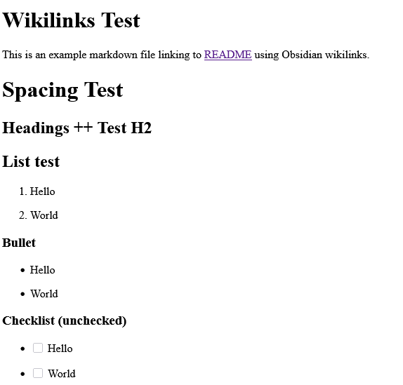
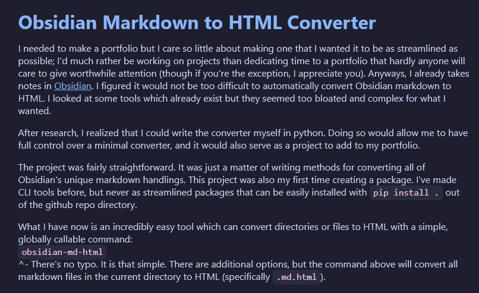

Obsidian Markdown to HTML Converter
How It Looks (Barebones)

How It Looks (Obsidian Styling)

Inspiration
I needed to make a portfolio but I care so little about making one that I wanted it to be as streamlined as possible; I'd much rather be working on projects than dedicating time to a portfolio that hardly anyone will care to give worthwhile attention (though if you're the exception, I appreciate you). Anyways, I already takes notes in Obsidian. I figured it would not be too difficult to automatically convert Obsidian markdown to HTML. I looked at some tools which already exist but they seemed too bloated and complex for what I wanted.
After research, I realized that I could write the converter myself in python. Doing so would allow me to have full control over a minimal converter, and it would also serve as a project to add to my portfolio.
The project was fairly straightforward. It was just a matter of writing methods for converting all of Obsidian's unique markdown handlings. This project was also my first time creating a package. I've made CLI tools before, but never as streamlined packages that can be easily installed with pip install . out of the github repo directory.
What I have now is an incredibly easy tool which can convert directories or files to HTML with a simple, globally callable command:
obsidian-md-html
^- There's no typo. It is that simple. There are additional options, but the command above will convert all markdown files in the current directory to HTML (specifically .md.html).